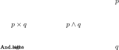

Before reading this, we assume that readers are familiar with Lean 4 programming basics. It should be sufficient by reading the first chapter of [1]
Keywords: object, universe level, universe, term, element
Consider the set of all formal strings S and the semantic equivalence relation ~ on S. For example, λ (x: Nat) => x + 4 and fun (y: Nat) => y+4 are two different strings but have the same meaning/semantic. We will use the same word object for both syntactic string and its meaning without confusion.
In lean, every object belongs to a universe level, below are some examples
universe level -1: proofs
universe level 0: 1, -2, 1.5, "hello world", true, λ (x: Nat) => x + 4
universe level 1: Nat, Int, Float, String, Bool, Nat → Nat
universe level 2: Type (aka Type 0)
universe level 3: Type 1
universe level 4: ...
Moreover, every object has a type, that is a function t that maps object from universe level n to universe level n + 1. In programming, this is called getting type of (type in Python, typeof in Javascript). For example, t(1) = Nat, t(true) = Bool, t(λ (x: Nat) => x + 4) = Nat → Nat. Let α be any object at level n, the collection of all objects of type α is called the universe α. For example, universe Nat consists of of all natural numbers. We write x: Nat to denote x is of type Nat and x is called a term (or element) of Nat
In lean, t is not exposed to user. However, during compilation process, lean allows user to print value and type of an object using #eval and #check
Let α β be objects at level n,m respectively. Then α⊕β, α×β, and α →β are objects at level max(n,m) which are called sum (coproduct, union), product (Cartesian product), and hom.
The universe α ⊕β consists of all elements from α and β
The universe α ×β consists of all pair (a,b) where a is an element of α and b is an element of β
The universe α →β consists of all functions mapping elements of α to elements of β
Keywords: Prop, CH, witnessed, proof, certificate, inhabited, uninhabited, introduction rule, elimination rule
Prop is an object at level 1 which is the same level with Nat. An element (level 0) of universe Prop is called a proposition. For example, True, 1 + 1 = 3, Fermat’s last theorem.
Curry–Howard (CH) [2] asserts that proving a proposition p: Prop is equivalent to constructing an element x: p at level -1. Hence, a proposition p: Prop is said to be true if and only if there exists an element x: p at level -1, we say that the truth of p: Prop is witnessed by proof x: p or x: p is a certificate for the truth of p: Prop.
We say p: Prop is inhabited if there is a proof for p: Prop, p: Prop is uninhabited if there is no proof for p: Prop
The type system in lean is powerful enough to model predicate logic, we will describe below the builtin logical connectives and related introduction rules and elimination rules. An introduction rule is a way to prove p: Prop from something else, an elimination rule is a way deduce something else from p: Prop
True: Prop is a proposition.
True admits one introduction rule: True.intro: True (also written as trivial: True)
True admits no elimination rule, that is, one cannot use True to prove anything
False: Prop is a proposition in lean.
False admits no introduction rule, that is one cannot prove False
False admits one elimination rule: False.elim
that is, one can prove everything from False. Let q: Prop be a proposition, then False.elim q: q is a proof
Let p: Prop and q: Prop be propositions and f: p → q be a map. If hp: p is a proof, then f hp: q is also a proof. This is known as modus ponens or implication elimination rule. In lean, p → q: Prop is a proposition. The introduction rules and elimination rules are then obvious from the context.
Let p: Prop and q: Prop be propositions, then p ∧ q: Prop is a proposition (also written as And p q or p × q)
And admits an and-introduction rule: And.intro
Let hp: p and hq: q be a proofs, then And.intro hp hq: p ∧ q is also a proof
And admits two and-elimination rules: And.left and And.right
Let h: p ∧ q be a proof, then And.left h: p and And.right h: q are also proofs (also written as h.left and h.right)

Let p: Prop and q: Prop be propositions, then p ∨ q: Prop is a proposition (also written as Or p q or p ⊕ q)
Or admits two or-introduction rules: Or.intro_left, Or.intro_right
Let hp: p be a proof, then Or.intro_left q hp: p ∨ q is also a proof (also written as Or.inl hp)
Let hq: q be a proof, then Or.intro_right p hq: p ∨ q is also a proof (also written as Or.inr hq)
Or admits one or-elimination rule: Or.elim
Let hpq: p ∨ q, hpr: p → r, and hqr: q → r be proofs, then Or.elim hpq hpr hqr: r is also a proof
Given a proposition p: Prop, ¬ p is a propositon (also written as Not p). ¬ p is precisely p → False
Given two propositions p: Prop and q: Prop, p ↔ q: Prop is a proposition (also written as Iff p q)
Iff admits an iff-introduction rule: Iff.intro
Let hpq: p → q and hqp: q → p be proofs, then Iff.intro hpq hqp: p ↔ q is also a proof
Iff admits two iff-elimination rules: Iff.mp, Iff.mpr
Let h: p ↔ q be a proof, then Iff.mp h: p → q and Iff.mpr h: q → p are also proofs
Let α be any object and p: α → Prop be a map, then ∀ x: α, p x is a proposition. An element of ∀ x: α, p x is of the form hpx {x : α} : α → p x, that is a function mapping x: α into a proof for p x. The introduction rules and elimination rules are then obvious from the context.
Let α be any object and p: α → Prop be a map, then ∃ x: α, p x is a proposition.
Exists admits one introduction rule: Exists.intro
Let x : α be an element and hpx: p x be a proof, then Exists.intro x hpx: (∃ x: α, p x) is also a proof
Exists admits one elimination rule: Exists.elim
Let hp: (∃ x: α, p x) and hpq: (∀ y: α, p y → q) be proofs, then Exists.elim hp hpq: q is a proof
So far, we introduced constructive logic, that is, if a proposition is true, then we are able to construct a certificate. However, it will be useful if we accept non-constructive proof, that is, assuming law of excluded middle: for any proposition p: Prop, p ∨¬ p is true. In lean, we can obtain a proof for p ∨¬ p from Classical.em p. Law of excluded middle also induces the principal of double-negation elimination: for any proposition p: Prop, ¬¬ p ↔ p. With the principal of double-negation elimination, one is able to carry out proof by contradiction, which is generally not possible in constructive logic.
when writing lean proof, one can use have <object>: <type> := <value> (same semantic ot let) and show <proposition> from <proof> so that the proof is easier to read for human.
Let a and b be any objects, then a = b is a proposition (also written as Eq a b). Eq admits several properties
(reflexive): Eq.refl
Let a be any object, then Eq.refl a: a = a is a proof
(symmetric): Eq.symm
Let hab: a = b be a proof, then Eq.symm hab: b = a is also a proof
(transitive): Eq.trans
Let hab: a = b, hbc: b = c be proofs, then Eq.trans hab hbc: a = c is also a proof
[1] David Thrane Christiansen. Functional programming in lean. https://lean-lang.org/functional_programming_in_lean/, 2025. Accessed: May 7, 2025.
[2] Curry-Howard. Curry-howard correspondence. https://en.wikipedia.org/wiki/Curry%E2%80%93Howard_correspondence, 2025. Accessed: May 7, 2025.
[3] Soonho Kong Jeremy Avigad, Leonardo de Moura and with contributions from the Lean Community Sebastian Ullrich. Theorem proving in lean 4. https://lean-lang.org/theorem_proving_in_lean4/, 2025. Accessed: May 7, 2025.
[4] Luis Wirth. Lean4 and the curry-howard isomorphism (luis wirth). https://youtu.be/Sy_4z751YWI, 2025. Accessed: May 7, 2025.